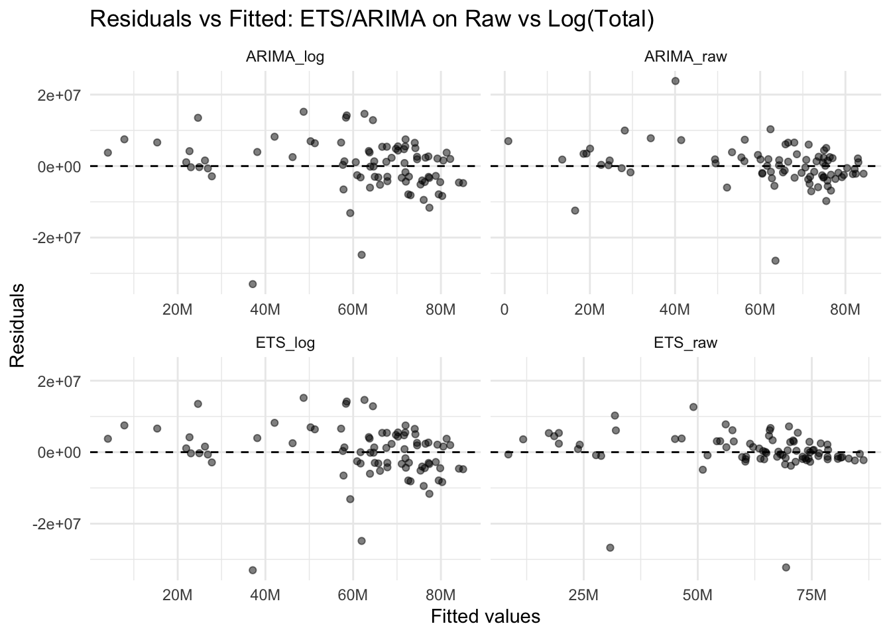
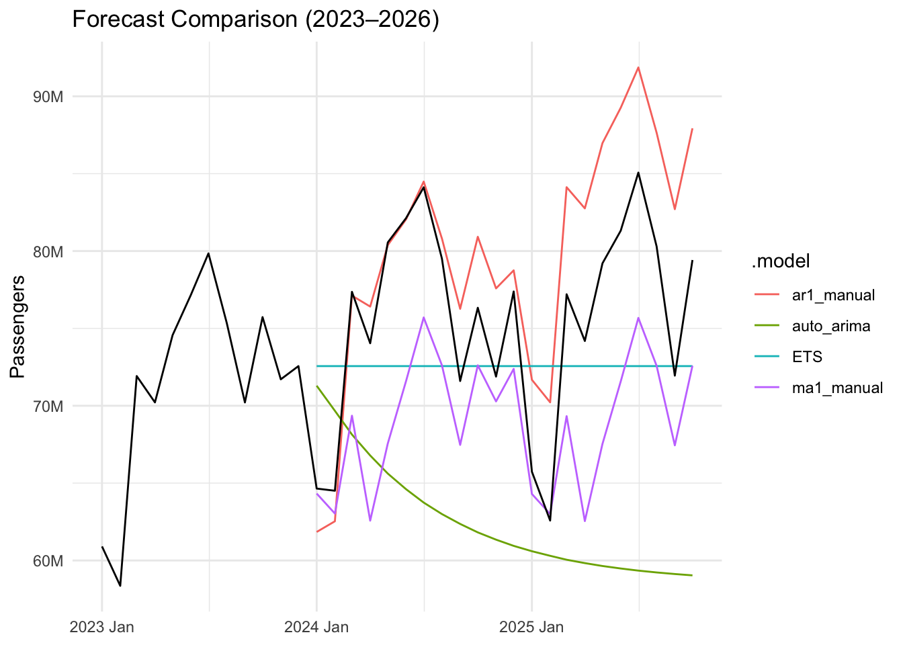

── Conflicts ────────────────────────────────────────── tidyverse_conflicts() ──
✖ dplyr::filter() masks stats::filter()
✖ tsibble::interval() masks lubridate::interval()
✖ dplyr::lag() masks stats::lag()
ℹ Use the conflicted package (<http://conflicted.r-lib.org/>) to force all conflicts to become errors
Attaching package: 'scales'
The following object is masked from 'package:purrr':
discard
The following object is masked from 'package:readr':
col_factor
h <-12# goo for evalaution seasonality# train test, fitn_total <-nrow(tsa_clean)train <- tsa_clean %>%filter(year(Month) <=2023)test <- tsa_clean %>%filter(year(Month) >2023)
max(test$Month) ; min(test$Month)
<yearmonth[1]>
[1] "2025 Oct"
<yearmonth[1]>
[1] "2024 Jan"
max(train$Month) ; min(train$Month)
<yearmonth[1]>
[1] "2023 Dec"
<yearmonth[1]>
[1] "2019 Jan"
# Simple diagnostic models (not your final comparison yet)diag_fit <- tsa_clean %>%model(ETS_raw =ETS(Total),ETS_log =ETS(log(Total)),ARIMA_raw =ARIMA(Total),ARIMA_log =ARIMA(log(Total)) )# Residuals vs fitted for bothdiag_resids <- diag_fit %>%augment()diag_resids %>%ggplot(aes(x = .fitted, y = .resid)) +geom_point(alpha =0.5) +geom_hline(yintercept =0, linetype ="dashed") +facet_wrap(~ .model, scales ="free_x") +labs(title ="Residuals vs Fitted: ETS/ARIMA on Raw vs Log(Total)",x ="Fitted values",y ="Residuals" ) +scale_x_continuous(labels = scales::label_number(scale_cut = scales::cut_short_scale()) ) +theme_minimal()

Residuals vs fitted plots for ETS and ARIMA on both the original and log-transformed scales show that the raw-scale models (ETS(Total) and ARIMA(Total)) have tighter, more homoscedastic residuals centered around zero. In contrast, the log-transformed models exhibit larger and more structured residuals. Together with the poorer RMSE/MAE for the log models, this indicates that a log transformation does not improve the fit and is not appropriate for this series. We therefore proceed using models on the original scale only.
Fitting Stage
fit <- train %>%model(ETS =ETS(Total),ARIMA =ARIMA(Total),ARIMA_pd =ARIMA((Total) ~ covid_shock +season() +trend()) )fc <-new_data(train, n =nrow(test)) %>%mutate(covid_shock =0)fc <- fit %>%forecast(new_data = fc)
# plot differenced series and ACF/PACF plots with non-seasonal and seasonal differencingtrain |> feasts::gg_tsdisplay( Total |>difference(lag =1),plot_type ="partial" ) + ggplot2::scale_y_continuous(labels =label_number(scale_cut =cut_short_scale()))
Warning: `gg_tsdisplay()` was deprecated in feasts 0.4.2.
ℹ Please use `ggtime::gg_tsdisplay()` instead.
Warning: Removed 1 row containing missing values or values outside the scale range
(`geom_line()`).
Warning: Removed 1 row containing missing values or values outside the scale range
(`geom_point()`).
Warning in attr(x, "align"): 'xfun::attr()' is deprecated.
Use 'xfun::attr2()' instead.
See help("Deprecated")
Warning in attr(x, "format"): 'xfun::attr()' is deprecated.
Use 'xfun::attr2()' instead.
See help("Deprecated")
.model
RMSE
MAE
MAPE
ar1_manual
5734254
4719541
6.348599
ETS
7018582
6124212
8.088764
ma1_manual
7687646
6627659
8.481189
auto_arima
15346419
14031963
18.057124
# Plot forecasts from all models, restricted to 2023 onwardforecast_all_models %>%filter(year(Month) >=2023) %>%autoplot(tsa_clean %>%filter(year(Month) >=2023), level =NULL) +scale_y_continuous(labels =label_number(scale_cut =cut_short_scale())) +labs(title ="Forecast Comparison (2023–2026)",y ="Passengers",x =NULL ) +theme_minimal()

Based on test-set RMSE, the ARIMA(1,1,0)(1,1,0) model (ar1_manual) achieved the best out-of-sample performance (RMSE ≈ 5.7M), outperforming both ETS and the alternative ARIMA specifications. Although ma1_manual had slightly better AICc on the training data, ar1_manual provided superior accuracy on the holdout period, so we select ar1_manual as our final model. Log-transformed and pandemic-adjusted models all produced substantially larger RMSE values and were discarded.
Warning in attr(x, "align"): 'xfun::attr()' is deprecated.
Use 'xfun::attr2()' instead.
See help("Deprecated")
Warning in attr(x, "format"): 'xfun::attr()' is deprecated.
Use 'xfun::attr2()' instead.
See help("Deprecated")
.model
.type
ME
RMSE
MAE
MAPE
ma1_manual
Test
-1145959
2985843
2177955
3.054853
ar1_manual
Test
3354766
6594746
5904169
8.039470
ETS
Test
4095700
7399181
6646001
9.014394
ARIMA
Test
11219474
13945564
13005485
17.332255
Although ETS produced the best accuracy on the single 12-month hold-out set, its performance dropped considerably under rolling-origin cross-validation. This difference occurs because the simple train/test split evaluates the model on only one recent period (a relatively stable year), where ETS performs well. In contrast, time-series cross-validation tests the model across multiple historical forecasting scenarios, including volatile periods such as the COVID-19 shock and the recovery phase. In these more challenging conditions, ETS is less stable, while the manual ARIMA(0,1,1)(0,1,0) model remains consistently accurate. Therefore, cross-validation indicates that the ARIMA model is more robust overall and is the preferred final model.
Workforce Prediction
# Workforce Assumptions (Based on TSA lane throughput)current_agents <-47500# Lane capacity per hour (assumed)pax_per_lane_hour <-180# Daily Operating hours per lanehours_per_day_lane <-16# Days per monthdays_per_month <-30# TSOs required to operate one lanetsos_per_lane <-8# Monthly lane capacitypax_per_lane_month <- pax_per_lane_hour * hours_per_day_lane * days_per_month# Share of total workforce assigned to screen (assumption)screening_duty_fraction <-0.5# Active checkpoint workforceactive_screening_tsos <- current_agents * screening_duty_fraction# Passengers each TSO effectively supports/monthpassengers_per_agent_month <- pax_per_lane_month / tsos_per_lane
# ma1_manual is your chosen final modelfc_final <- all_models |>select(ma1_manual) |>forecast(h =nrow(test))
Insight: Nearly 200 TSA Officers are paid by the government but work full-time on union matters. These people do not retain certification to perform screening functions. Additionally, in a recent TSA employee survey, over 60% said poor performers are allowed to stay employed and, not surprisingly, continue to not perform.
Recommendation We recommend that TSA adopt a Monthly Forecasting Cadence anchored by the ARIMA(0,1,1)(0,1,0) model to guide checkpoint workforce planning. This forecasting approach provides TSA with a reliable month-ahead view of expected passenger volumes, enabling proactive and data-driven staffing decisions.
Using TSA’s own operational throughput standards (180 passengers per lane per hour, ~8 TSOs required per lane across shifts) and assuming that approximately 50% of the agency’s 47,500 officers rotate through screening duties, our workforce model shows that TSA will need only 7,000–8,500 officers per month on screening duty throughout 2024. Even after applying a 10% safety buffer to account for forecast uncertainty, this represents only 25–36% of the available screening workforce.
This reveals a significant and consistent capacity margin that TSA can strategically leverage. Monthly forecasting enables TSA to:
Adjust screening deployments by month, rather than relying on static annual templates
Reallocate 15–25% of screeners during low-volume periods to training, leave, administrative roles, or airport support
Reduce unnecessary overstaffing during shoulder travel months
Prepare earlier for predictable surges, decreasing reliance on overtime and last-minute staffing during holiday and summer peaks
Enhance TSA well-being by smoothing workload intensity and improving shift predictability
By aligning staffing to model-based demand—and doing so monthly—TSA can maintain its <30-minute wait-time service level while operating more efficiently, reducing operational strain, and improving workforce readiness without reducing headcount.